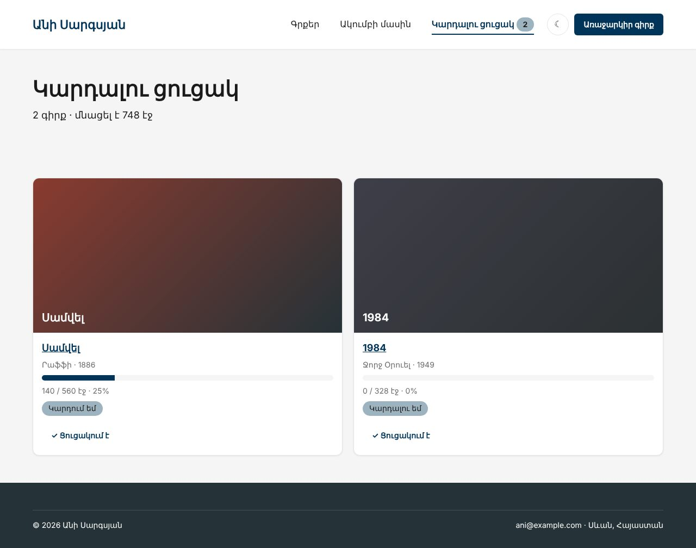
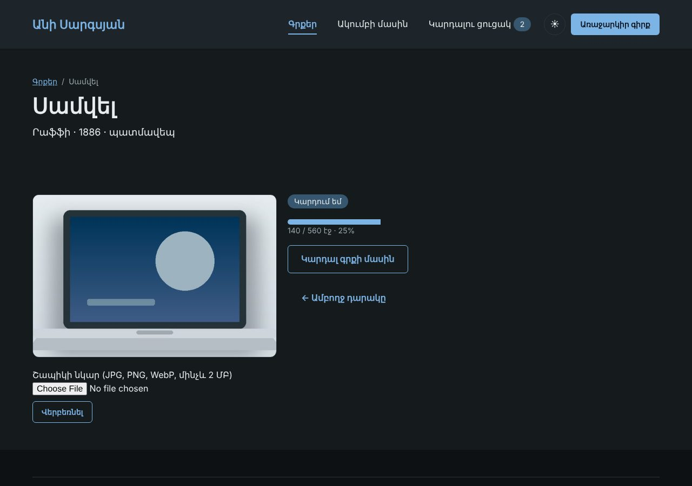

Տնային աշխատանք · PHP Դաս 07 · մինի-նախագիծ
Այցելուն կազմում է իր «Կարդալու ցուցակը»․ այն պահվում է սեսիայում, ինչպես ՏեխնոՄարկետի զամբյուղը։ Մուգ թեման՝ cookie-ով, առանց JavaScript-ի։ Անին վերբեռնում է գրքի շապիկի նկարը, իսկ սերվերը ստուգում է ֆայլի ԻՐԱԿԱՆ տիպը։
Դաս 01–07․ session_start անվտանգ կարգավորումներով, $_SESSION, setcookie, $_COOKIE, flash, $_FILES, finfo, getimagesize, move_uploaded_file, random_bytes։ Բազա դեռ չկա․ շապիկի անունը՝ սեսիայում (Դաս 10-ից՝ բազայում)։


Շարունակիր քո նախագիծը։ Եթե բաց ես թողել նախորդ դասը, սկսիր Դաս 06-ի օրինակից։
starter/css/php-07.css — գրքի էջի քարտըstarter/images/fake-cover.jpg — PHP ֆայլ՝ .jpg անունով (տնային 9)․ պիտի մերժվիstarter/images/test-cover.jpg — իսկական նկար՝ վերբեռնման փորձի համար| Գործարկել |
|---|
php -S localhost:8000 |
session_start(['cookie_httponly' => true, 'cookie_samesite' => 'Lax', 'use_strict_mode' => true])require_once __DIR__ . '/bootstrap.php'-ովlist-functions.php՝ listAdd, listRemove, listCount, inList, listItems$books-ից (տնային 6)function listAdd(int $id): bool
{
$list = readingList();
if (in_array($id, $list, true) || count($list) >= LIST_MAX) {
return false; // արդեն կա կամ ցուցակը լի է
}<form method="post" action="list-add.php">, ոչ հղումsafeBack($_POST['back'])․ //evil.com-ը չի անցնում (տնային 10)/** Միայն ներքին հասցե՝ բաց վերահղման դեմ (Դաս 07-ի տնային, կետ 10) */
function safeBack(?string $back): string
{
$back = (string) $back;
if ($back === '' || str_starts_with($back, '//') || str_contains($back, ':')) {
return 'index.php';
}theme.php՝ setcookie('theme', ...) մեկ տարով<body class="dark">, եթե isDark() (տնային 7)enctype="multipart/form-data"uploadImage()՝ չափ, finfo, getimagesize, պատահական անունstarter/images/fake-cover.jpg-ը (PHP ֆայլ՝ .jpg անունով) (տնային 9)// ԻՐԱԿԱՆ տիպը՝ բովանդակությունից, ոչ անունից ⭐
$mime = (new finfo(FILEINFO_MIME_TYPE))->file($file['tmp_name']);
$allowed = ['image/jpeg' => 'jpg', 'image/png' => 'png', 'image/webp' => 'webp'];
if (!isset($allowed[$mime]) || getimagesize($file['tmp_name']) === false) {
return [null, 'Միայն JPG, PNG կամ WebP նկար'];
}
$name = bin2hex(random_bytes(8)) . '.' . $allowed[$mime]; // անունը տալիս ենք ՄԵՆՔPHPSESSID-ը HttpOnly է (տնային 2, 3)fake-cover.jpg-ը մերժվում էback=//example.com-ը վերադարձնում է index.php| Սխալ | Ինչպես ուղղել |
|---|---|
| Ցուցակը դատարկվում է ամեն էջում | session_start()-ը չկա այդ էջում․ ամեն էջ՝ bootstrap.php-ով |
$_FILES-ը դատարկ է | Մոռացել ես enctype="multipart/form-data" |
| Վերբեռնված նկարը 404 է | Ուղին՝ images/uploads/, և թղթապանակը պետք է գոյություն ունենա |
| Cookie-ն չի պահվում | setcookie()-ից առաջ արդեն HTML է ուղարկվել |
Սրանք Դաս 07-ի տնային աշխատանքի կետերն են։ «մինի-նախագծում» նշվածները արդեն կատարել ես վերևի քայլերում՝ Անիի ակումբում։ Մնացածը կատարիր ՏեխնոՄարկետում, ինչպես գրված է դասում։
PHPSESSID-ը։ Ուղարկիր սքրինշոթ։document.cookie-ն Console-ում httponly-ով և առանց դրա։ Նկարագրիր տարբերությունը։data.php-ում։ մինի-նախագծումuploadImage()-ով։ մինի-նախագծում.php ֆայլ՝ վերանվանելով .jpg։ Բռնվե՞ց finfo-ով։ մինի-նախագծումback=https://example.com ստուգումով և առանց դրա։ մինի-նախագծումԵրբ բաժին 03-ի բոլոր կետերը նշված են, բացիր օրինակը։ Գտիր մեկ բան, որ դու արել ես այլ կերպ, և մտածիր՝ որն է ավելի հասկանալի և ինչու։ Քո լուծումը կարող է տարբերվել և լինել ճիշտ։